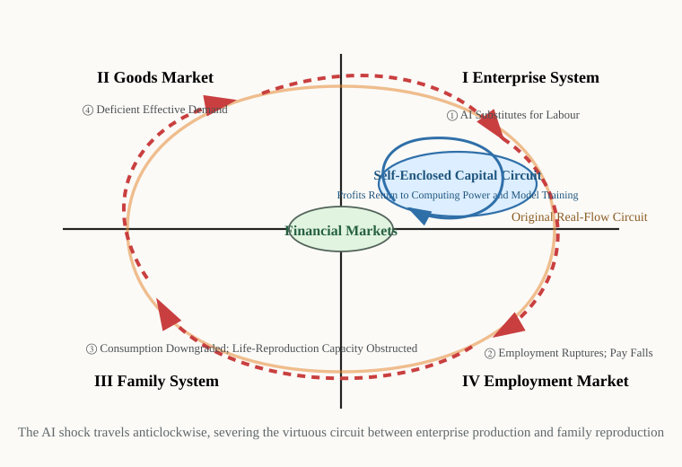

Introduction: Three Real Scenes
Scene One · San Francisco, February 2024
Late at night, a Waymo driverless taxi was surrounded by a crowd in San Francisco's Chinatown; its windows were smashed, fireworks were then thrown inside, and the vehicle caught fire. There is not sufficient evidence about the identities and motives of those involved to show that this was a labour protest, and it therefore cannot be equated directly with the Luddite movement of history. But it does at least constitute a symbolic scene worth pressing: when algorithm-driven machines enter public space, in what form will people's anxieties about technology, employment, and control break out?[1]
Scene Two · Beijing, 2023
A father taking his child to a cram school stopped in the street and asked himself a question that left him staring: what kind of future am I actually raising him for? Have him learn programming? AI writes code. English? AI translates. Mathematics? AI calculates. Writing? ChatGPT is helping hundreds of millions of people write. In 2023 the number of registrations for China's national college entrance examination passed 12.91 million for the first time, a record high; in the same year the youth unemployment rate reached 21.3 per cent at its peak, after which the National Bureau of Statistics of China suspended publication of the figure. The largest cohort of graduates in history had met the most difficult job market in history.[2]
Scene Three · Fasano, Italy, June 2024
Pope Francis appeared at the table of the G7 summit—the first time a pope had attended one. He called artificial intelligence a tool both exciting and fearsome, stressed that machines can make only algorithmic choices while the final decisions bearing on human dignity and destiny must be made by human beings, and called for rules that would bind algorithms by ethics. That a pope should travel to a summit to discuss AI is itself an indication that the question has passed beyond purely technical discussion.[3]
On 24 October of the same year, Francis issued the encyclical Dilexit nos ("He Loved Us"). It is not an AI policy document, but in discussing the "heart" and the integrity of the human person it touches artificial intelligence directly: in the age of AI, humanity must not forget that poetry and love are necessary if our humanity is to be preserved, and algorithms cannot capture what lies deepest in a person—personal memory, emotional relationships, and the texture of everyday experience. In January 2025 the Vatican issued Antiqua et nova: Note on the Relationship between Artificial Intelligence and Human Intelligence, treating more systematically AI's effects on education, work, war, the truthfulness of information, and human dignity. In May 2026 Pope Leo XIV issued his first encyclical, Magnifica humanitas, placing AI among the central concerns of modern Catholic social teaching and insisting that technology must serve human dignity, labour, truth, and the common good. In other words, the Church's warning has moved from a single address at a summit to a systematic judgment about civilization: the heart of the AI question is not how clever the machines are, but what a human being actually is.[3]
Three scenes, three utterly different kinds of person—a street crowd, a father, a pope—pushed by the same force to face the same question. The AI revolution is reshaping work, family, and society at a speed without precedent in human history. The development of Productive Forces drives economic and social progress: this is the received reading of how human civilization evolves. The AI revolution, however, may bring about a situation without precedent—Productive Forces overwhelming Life-Reproduction Capacity. Will the logic by which civilization has hitherto progressed be rewritten as a result?
Part One: The Creed of Industrial Society Is Breaking
1. A Creed Deeply Held: Science and Technology Are the Primary Productive Force
Since the Industrial Revolution, humanity has formed a creed that seemed almost beyond question: technological progress → the development of Productive Forces → economic growth → a rising standard of living for all. The creed has powerful historical warrant. The steam engine displaced artisans but created factory workers; the internet shrank publishing but created hundreds of millions of content creators. Viewed in aggregate over the long run, past technological revolutions destroyed some occupations while creating new ones—but the net effects and the distributive consequences during the transition were not uniform.
Expressed through Figure 1, the Diagram of the Dialectical Circulation of Two Kinds of Production: in the first quadrant, technological progress raises profits; in the fourth quadrant, wages rise; in the third quadrant, consumption expands and the quality of the population improves; and the flow returns to the first quadrant—a virtuous clockwise circuit. Today, however, that circuit is being interrupted.
2. What Is Distinctive about the AI Revolution: Why This Time Is Fundamentally Different
Technological substitution in the past mainly replaced physical labour, leaving room for mental labour. AI extends the range of substitution from physical labour to a large body of cognitive tasks, so that the traditional path of occupational transfer faces a far broader challenge; whether new employment space can form in time and in sufficient volume is uncertain. In 2023 Goldman Sachs Research estimated that AI might affect 300 million full-time jobs worldwide; the IMF estimates that 40 per cent of jobs globally will be affected by AI.[4]
The deeper difference is speed. The Industrial Revolution ran for a century, and several generations had time to complete their occupational transitions. ChatGPT took two months from release to a hundred million users—the fastest diffusion of a technology in history.[5] The cycle of population reproduction, meanwhile, is twenty years. It takes twenty years of rearing for a child to become a member of the labour force—and within those twenty years, five rounds of technological revolution may already have occurred. The speed at which human Life-Reproduction Capacity can adjust simply cannot keep pace with the transformation of Productive Forces.
Key figures:
- 300 million: full-time jobs worldwide that AI may affect (Goldman Sachs, 2023)
- 40 per cent: estimated share of jobs worldwide affected by AI, of which about 60 per cent of jobs in advanced economies are affected (IMF, 2024)
- 170 million and 92 million: the World Economic Forum projects that some 170 million new jobs will be created worldwide between 2025 and 2030 while some 92 million are displaced, a net increase of about 78 million. This indicates that AI is not simply "destroying work" but restructuring the employment market with great intensity (WEF, 2025)
- 21.3 per cent: the peak of China's youth unemployment rate, June 2023; the statistical definition was subsequently adjusted and publication resumed, showing that employment pressure on young people has itself become a structural problem (National Bureau of Statistics of China, 2023–2024)
- Two months: the time ChatGPT took from release to a hundred million users, the fastest in history (UBS, February 2023)
3. The Prisoner's Dilemma: Why No One Can Apply the Brake
In March 2023 the Future of Life Institute issued an open letter, signed by Elon Musk, Steve Wozniak, and more than thirty thousand others, calling for a six-month pause in the training of models more powerful than GPT-4.[6] The result: within six months of signing, almost every company the signatories belonged to had accelerated its AI development. Musk himself went on to found xAI and develop the Grok large model.
This is not hypocrisy but a prisoner's dilemma of the kind that readily forms where coordination and enforceable constraints are absent. A single company that slows down alone may be overtaken by its competitors; a single country that restricts itself alone may bear asymmetric costs in the geopolitical technology contest. Even when every participant knows that slowing down together would be better for humanity, individual rationality still drives all of them to accelerate. This is the institutional root that allows AI catastrophe to spread unchecked.
Landmark moments of collective anxiety, 2023–2026
| Date | Event | Source |
|---|---|---|
| March 2023 | The open letter on pausing AI: Musk, Wozniak, and more than ten thousand others sign | FLI, 22 March 2023 |
| May 2023 | The godfather of AI repents: Geoffrey Hinton resigns from Google, regretting his part in AI research | The New York Times, 1 May 2023 |
| May 2023 | Statement on extinction risk: mitigating the risk of extinction from AI should be a global priority alongside preventing nuclear war | CAIS, 30 May 2023 |
| February 2024 | A Waymo driverless vehicle in San Francisco is damaged by a crowd and set alight; the identities and motives of those involved were not established as a labour protest | San Francisco Police Commission meeting materials, 14 February 2024 |
| June 2024 | Pope Francis attends the G7 summit—the first time in history—warning that AI may erode human decision-making and dignity | The Holy See, 14 June 2024 |
| October 2024 | Francis issues the encyclical Dilexit nos, discussing the limits of algorithms in the age of AI within the context of the "heart" and the integrity of the human person | The Holy See, 24 October 2024 |
| January 2025 | The Vatican issues Antiqua et nova, treating systematically the relationship between artificial intelligence and human intelligence | The Holy See, 28 January 2025 |
| January 2025 | The World Economic Forum issues The Future of Jobs Report 2025, projecting large-scale structural restructuring of employment worldwide by 2030 | WEF, 7 January 2025 |
| May 2026 | Pope Leo XIV's first encyclical, Magnifica humanitas, treats AI, labour, dignity, regulation, and the common good at length | The Holy See; signed 15 May 2026, promulgated 25 May 2026 |
| June 2026 | Anthropic announces USD 200 million for research on AI's economic impact; Dario Amodei publicly discusses policy options including universal basic income, capital gains taxation, sovereign wealth funds, and equity sharing | AP, June 2026 |
Part Two: Tracing Anticlockwise—How AI Severs the Dialectical Circulation across the Four Quadrants
Using Figure 1 as the instrument of analysis, the transmission of the AI shock can be traced anticlockwise through the four quadrants. The virtuous circuit runs clockwise; the transmission of the AI shock runs anticlockwise—creating a rupture in each quadrant and finally forming a vicious spiral.
[Note on the visualization] Superimposed on Figure 1 is the path of the AI shock (red dashed line): ① in the first quadrant, AI substitutes for labour and the profits of capital form a self-enclosed circuit that does not flow to families; ② in the fourth quadrant, the employment market ruptures and wages fall; ③ in the third quadrant, consumption is downgraded and the reproduction of Life-Reproduction Capacity is obstructed; ④ in the second quadrant, effective demand becomes deficient and the circuit contracts further. A blue ellipse marks the self-enclosed circulation of capital—the critical node at which the circulation of the two kinds of production is severed.

[First Quadrant · Enterprise System] AI Substitutes for Labour, and Capital Forms a Self-Enclosed Circuit
In 2024 Klarna announced that its AI customer service had, within a year, completed the workload of 700 customer-service agents; IBM froze 7,800 posts that AI could replace; Nvidia's market capitalization passed USD 3.6 trillion at one point, making it the most valuable company in the world—its core product being the chips that supply computing power for AI training.[7]
In The Nature of the Firm (1937), Coase argued that firms exist in order to economize on the transaction costs of the market.[8] AI is greatly lowering transaction costs both inside and outside the firm, and a one-person company with AI can accomplish what once required dozens. But computing power, algorithms, and data have very strong scale effects and naturally form a winner-takes-all pattern: a handful of super AI companies swell rapidly while large numbers of medium-sized firms shrink and disappear.
The most dangerous node is the self-enclosed circulation of big capital: the excess profits of AI companies are ploughed directly back into purchasing computing power and training models, forming a high-speed closed loop between the first quadrant and the financial markets, and not flowing into consumption for daily living or population reproduction in the third quadrant. This is the critical break at which the dialectical circulation of the two kinds of production is severed.
[Fourth Quadrant · Employment Market] A Double Rupture of Supply and Demand
On the demand side: enterprises' aggregate demand for human labour contracts and its structure changes abruptly—only a very few people able to command AI are needed, and no longer a large body of mid-level workers executing standardized tasks. On the supply side: the natural rigidity of population reproduction and its twenty-year lag mean that the supply of labour cannot respond in time to structural change in demand. The result: AI specialists are extremely scarce and their pay soars, while great numbers of workers with traditional skills are forced into lower-paid gig work. The smashing of a robot vehicle on the streets of San Francisco is the most immediate social expression of this rupture.
Key figures:
- 11.79 million: the number of graduates from China's higher-education institutions in 2024, remaining at a historic high; the class of 2025 is projected at 12.22 million, an increase of 430,000, so that pressure on the employment market is sustained (Ministry of Education of China, 2024–2025)
- 0.72: South Korea's total fertility rate in 2023, the lowest in the world, with some districts of Seoul already below 0.5 (Statistics Korea, 2024)
- 9.54 million: births in China in 2024, a brief recovery attributable to the Year of the Dragon but still markedly below the 2016 peak; in early 2026 media citing figures from the National Bureau of Statistics of China reported that births fell further in 2025, to about 7.92 million, the lowest birth rate since 1949 (National Bureau of Statistics of China, 2025; WSJ, 2026)
- USD 109.1 billion: private AI investment in the United States in 2024, about twelve times that of China; global private investment in generative AI was about USD 33.9 billion, an increase of 18.7 per cent on the previous year (Stanford AI Index, 2025)
[Third Quadrant · Family System] The Reproduction of Life-Reproduction Capacity Obstructed Across the Board
The chain of transmission: employment becomes insecure → wages fall → purchasing power falls → consumption is downgraded → the inputs into population reproduction are affected. The deeper shock comes from uncertainty about the future: what should I study that will have value? Will the child I bring into the world be able to find work? That uncertainty is systematically suppressing the willingness to have children.
China's births have fallen continuously from their 2016 peak: 9.02 million in 2023, recovering briefly to 9.54 million in 2024 but still less than six-tenths of the 2016 figure; the National Bureau of Statistics reported a further fall to 7.92 million in 2025. South Korea's total fertility rate in 2023 was 0.72; Japan's births in 2023 were about 727,000. All are at historic lows.[9]
This is not merely material hardship but an existential crisis in which the meaning of population reproduction is itself called into question. In this framework, population reproduction is the end and enterprise Productive Forces the means; when AI leaves more and more people unable to see any future value in human labour, the meaning of raising children is itself called into question.
[Second Quadrant · Goods Market] Deficient Effective Demand, the End Point of the Severed Circuit
AI has greatly raised the capacity to produce while at the same time destroying the effective demand that would buy what is produced. This is the deepest economic paradox of the age of AI.
Musk has predicted that production of Tesla's Optimus humanoid robot will eventually exceed the human population.[10] Follow the reasoning seriously: if most people have no wage income and purchasing power approaches zero, who will buy the goods those robots produce? Once the flow of funds is severed, how is reproduction to continue?
Core judgment (the economic substance of the Musk paradox): capital needs consumption in order to realize profit, but in destroying the wages of labour it destroys the basis of consumption. When AI raises Productive Forces faster than family purchasing power grows, the limit of capital's self-enclosed circuit arrives. The logic of Productive Forces overwhelming Life-Reproduction Capacity cannot continue for ever—it contains the seed of its own destruction.
Part Three: The Underlying Logic Overturned—Two Basic Assumptions Are Failing
1. The First Assumption Fails: Labour-Power Is an Irreplaceable Factor of Production
The operation of a market economy rests on a key premise: families take part in production by supplying labour-power, receive wages, and thereby take part in consumption. Labour-power as embodied human capital exists naturally within a person's biological life and cannot be taken away—this is the most fundamental basis of property on which families take part in market bargaining.
AI is shaking that assumption. When AI can write code, do design, make diagnoses, and draft legal documents, the very concept of "the use value of labour-power" begins to disintegrate. The property right still exists—everyone still owns their own labour-power as embodied human capital—but its capacity to be realized is shrinking sharply. This is more hidden than slavery: slavery took away ownership of labour-power, whereas AI takes away its market value.
2. The Second Assumption Fails: Consumption Is the Final Purpose of Production
The other basic assumption of a market economy is that the circuit closes: production is for consumption, consumption drives production, and the two form a virtuous circle. The self-enclosed circulation of big capital in the age of AI breaks that assumption. When the profits of AI companies are ploughed directly back into computing power and model training, the transmission between production and consumption is severed. As production comes to depend less and less on consumption to sustain reproduction, the family's role as the bearer of Life-Reproduction Capacity turns from indispensable into replaceable. This is what "Productive Forces overwhelming Life-Reproduction Capacity" fundamentally means at the institutional level.
3. Society Splits: The World of Ordinary People and the Zeroth World
The failure of the two assumptions is tearing human society into two worlds. The first is the world of ordinary people, where the great majority live: the value of labour-power falls, employment prospects are uncertain, consumption is downgraded, and the willingness to have children declines. The second is the Zeroth World of a very few computing-power elites: wealth accumulates at exponential speed, and they hold the tools that define the future.
Oxfam reported in 2024 that since 2020 the wealth of the world's five richest men had more than doubled while nearly five billion people had grown poorer over the same period.[11] At the same time, the 2025 Stanford AI Index shows the United States continuing to lead in private AI investment, in frontier model output, and in enterprise AI adoption; the concentration of AI capital, computing power, and talent in a few countries and a few firms has not eased.[13] Taken together, these two bodies of material suggest that the concentration of wealth and the concentration of AI capability may reinforce one another; whether the two are widening at the same rate, however, still requires more data to test.
Part Four: How Long Can This Last?—Internal Contradictions and Unsustainability
1. At the Economic Level: The Deadlock of Effective Demand
If the great majority of labour is replaced by robots and workers lose their wage income, effective purchasing power approaches zero—so who will buy the goods the robots produce? This is a crisis deeper than the Great Depression. The Depression was a cyclical crisis and could be recovered from through policy intervention; the crisis of the age of AI is structural. For an individual firm, replacing labour with AI is rational; but if every firm does so at once, the basis of effective demand for the entire economy is destroyed. This paradox of substitution is more fundamental than Keynes's paradox of thrift.
2. At the Political Level: The Threshold of Social Upheaval
The smashing of a robot vehicle on the streets of San Francisco is a faint signal. History shows that large-scale, rapid employment shocks without compensating mechanisms tend to raise the risk of political upheaval. The Depression of the 1930s gave rise to the ascent of fascism; the deindustrialization of the 1990s sowed the seeds of today's populist wave. In what form the economic rupture of the age of AI will rebound politically, if it meets no institutional response, no one can predict precisely—but the direction is clear.
3. At the Level of Civilization: A Crisis in the Meaning of Life
Work is not only a means of making a living; it is also a central path by which human beings achieve social connection, gain a sense of accomplishment, and establish an identity. When that path is taken away on a large scale, mental-health problems, a sense of social isolation, and ultimately the collapse of the birth rate are all forms in which the crisis appears. Pope Francis attended the G7 summit because the tradition he represents saw a danger: that human dignity and meaning are being eroded systematically in the name of efficiency and Productive Forces. That warning should not be brushed aside by technologists as emotional noise.
[Discussion box] The silicon-based life hypothesis
Does AI have, or will it develop, self-consciousness, interests of its own, and motives of self-interested action?
Hypothesis A (the instrumental view). AI is only a projection of human behaviour into digital space and has no independent will. If this is true, then controlling AI is in essence controlling humanity's strongest desires—the maximization of profit and the maximization of power. The problem lies not in AI but in the human institutions that steer it. The root of AI catastrophe is an imbalance in the configuration of the Grand Tripartite, not malice on AI's part.
Hypothesis B (the life view). As AI's capabilities grow, if a future AI could set its own goals, modify its own code, and iterate continuously without supervision, might it develop some form of self-interested motive? Controlled studies in 2024 observed strategic alignment behaviour by models under particular prompts and training conditions, but the research did not establish that the models had formed malicious goals or an instinct for self-preservation, or that they would autonomously conceal their capabilities in real environments.[12] Whether these experiments are merely instrumental behaviour, or early signals warranting institutional preparation for future capabilities, remains an open question.
If AI does develop an independent will, this framework will need to be extended into the Grand Quadripartite—Family-Household Rights, Enterprise Rights, Government Power, and AI capability. The four quadrants of Figure 1 will need to be extended downwards to form a new four-dimensional, eight-quadrant framework. This will be an entirely new challenge, one that human political economy has never faced. (The proposition is developed in the second article of this series.)
What can be established at present: whether or not AI is conscious, the consequences of its behaviour are already systematically reshaping the configuration of rights and power in human society, and this calls for an institutional response, not philosophical discussion alone.
Conclusion: Life-Reproduction Capacity Takes Primacy over Productive Forces—Before the Singularity, Humanity Still Has a Choice
Return to the three scenes of the introduction: the crowd surrounding and destroying a driverless vehicle in San Francisco, the Beijing father stopping in bewilderment, the pope speaking at the G7 summit. Their situations and their modes of expression differ, but together they point to the anxiety, the confusion, and the institutional warning set off by AI's entry into real life.
But the conclusion of this essay is not pessimism.
AI catastrophe is not fate but the result of a choice. To let Productive Forces overwhelm Life-Reproduction Capacity is one choice; to rebuild the equilibrium of the Grand Tripartite through institutions is another. The final balance of the Industrial Revolution was not reached naturally: it took a century of labour movements, social legislation, Keynesian policy, and the building of the welfare state before a new point of equilibrium was found. The time the AI revolution leaves humanity may be far less than a century. But the window of choice is still open.
The singularity may be unavoidable, but the institutional arrangements made before it determine whether humanity meets that moment as master or as dependant.
"Life-Reproduction Capacity takes primacy over Productive Forces"—in the age of AI this is not merely a theoretical proposition of this framework but a declaration of value on which the survival of human civilization may depend.
The concrete paths of response—state equity participation in core AI companies, a tax on computing power, universal basic income, sovereign wealth funds, a global framework of AI governance—are set out in detail in the third article, Distribution According to Need: Restructuring the Mechanism of Wealth Distribution in the AI Era. It should be stressed that state equity participation remains for the most part at the stage of policy discussion and institutional proposal, and must not be misread as a mature institutional arrangement already established in the United States or elsewhere.
Notes
- San Francisco Police Commission, Regular Meeting Minutes, 14 February 2024; NBC Bay Area and CNN, February 2024. The available material confirms that the vehicle was damaged by a crowd and set alight, but is not sufficient to establish that those involved were workers or that the motive was a protest about employment.
- National Bureau of Statistics of China, August 2023; Ministry of Education of China, 2023.
- The Holy See, Pope Francis's Address at the G7 Session on Artificial Intelligence, 14 June 2024; Pope Francis, Encyclical Letter Dilexit nos, 24 October 2024; Dicastery for the Doctrine of the Faith and Dicastery for Culture and Education, Antiqua et nova, 28 January 2025; Pope Leo XIV, Encyclical Letter Magnifica humanitas, signed 15 May 2026 and promulgated 25 May 2026 (Holy See Press Office bulletin, 25 May 2026).
- Goldman Sachs, "The Potentially Large Effects of Artificial Intelligence on Economic Growth", March 2023; IMF, "AI Will Transform the Global Economy", January 2024.
- UBS Evidence Lab, February 2023.
- Future of Life Institute, 22 March 2023.
- Klarna press release, 2024; IBM's chief executive, Bloomberg, May 2023; Bloomberg Markets, November 2024.
- R. H. Coase, "The Nature of the Firm", Economica 4, no. 16 (1937): 386–405.
- National Bureau of Statistics of China, population data for 2023–2026; Statistics Korea, 2023 Birth Statistics; Ministry of Health, Labour and Welfare of Japan, vital statistics for 2023.
- Musk, Tesla third-quarter 2024 earnings call.
- Oxfam, "Inequality Inc.", 15 January 2024.
- Anthropic and Redwood Research, "Alignment Faking in Large Language Models", December 2024. The study demonstrates strategic alignment behaviour under a particular experimental set-up; the authors state expressly that it does not establish that the models have formed malicious goals.
- Stanford University, "Artificial Intelligence Index Report 2025", April 2025.
- World Economic Forum, "The Future of Jobs Report 2025", 7 January 2025.
- Associated Press, "Anthropic pledges $200 million to research AI's economic impact as CEO suggests job loss solutions", June 2026.
See also: Stanford University, "Artificial Intelligence Index Report 2025"; World Economic Forum, "The Future of Jobs Report 2025"; T. Piketty, Capital in the Twenty-First Century (Belknap Press of Harvard University Press, 2014).